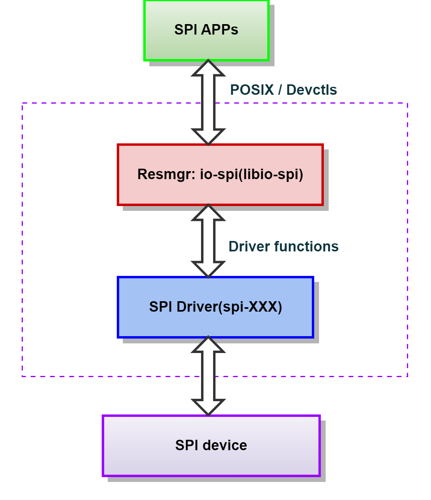

This chapter describes the SPI framework.
The SPI (Serial Peripheral Interface) is an interface bus used to exchange data between SoCs running QNX OS and peripheral ICs (integrated circuits), also known as "SPI devices". The framework supports uni-directional and bi-directional communication. It also supports DMA, SMMU, and secpol.

A single SPI driver process can support one or more SPI buses with one thread per bus. To configure the available SPI buses and devices, the SPI driver uses a configuration file, spi.conf. After parsing the configuration file, the SPI driver creates a unique device path for each SPI device specified (e.g., /dev/io-spi/spi0/dev0).
This section describes the interface between the SPI applications and io-spi. The interface uses standard POSIX functions and custom devctl() commands.
This section describes the interface between io-spi and the SPI drivers.
The SPI device driver sends SPI data to and receives data from the SPI hardware. Each SPI driver must implement the spi_init() function to access the device driver structures and functions defined in <hw/io-spi.h>. The two key structures for interfacing io-spi and the SPI drivers are spi_dev_t and spi_funcs_t.
The spi_dev_t structure contains information about all SPI devices in the system. io-spi initializes this list based on the contents of the SPI config file, spi.conf. The low-level SPI driver can modify the individual fields, as necessary.
typedef struct _spi_dev spi_dev_t;
/* SPI hardware device structure */
struct _spi_dev {
iofunc_attr_t attr; /* Note: attr has to be the first member!!!
* We'll use it to get the addr of spi_dev_t
*/
int parent_busno;/* Device parent bus No. */
spi_devinfo_t devinfo;
uint32_t devctrl; /* SPI device control register value. Calculated by setcfg */
int resmgr_id;
spi_bus_t *parent_bus; /* The address of its parent bus node *
spi_dev_t *next; /* Pointer to the next dev node */
};
The spi_funcs_t structure is the interface between io-spi and low-level SPI device driver. It defines functions that io-spi calls for the hardware-specific low-level module.
#include <hw/io-spi.h>
typedef struct _spi_funcs spi_funcs_t;
struct _spi_funcs {
void (*spi_fini) ( void *const hdl );
void (*drvinfo) ( const void *const hdl,
spi_drvinfo_t *info );
void (*devinfo) ( const void *const hdl,
const spi_dev_t *const spi_dev,
spi_devinfo_t *const info );
int (*setcfg) ( const void *const hdl,
spi_dev_t *spi_dev,
const spi_cfg_t *const cfg );
int (*xfer) ( void *const hdl,
spi_dev_t *const spi_dev,
uint8_t *const buf,
const uint32_t tnbytes,
const uint32_t rnbytes );
int (*dma_xfer) ( void *const hdl,
spi_dev_t *spi_dev,
dma_addr_t *addr,
const uint32_t tnbytes,
const uint32_t rnbytes );
int (*dma_allocbuf) ( void *const hdl,
dma_addr_t *addr,
const uint32_t len );
int (*dma_freebuf) ( void *const hdl,
dma_addr_t *addr );
};